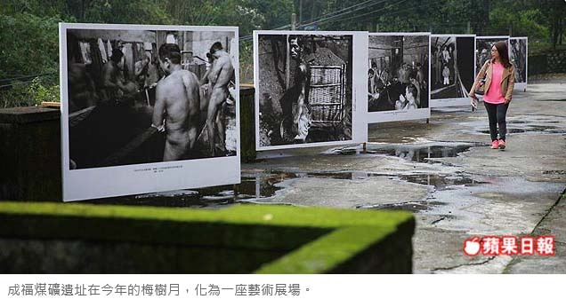
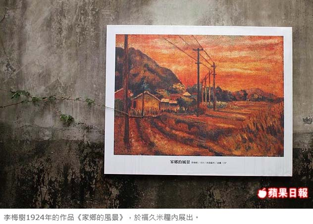
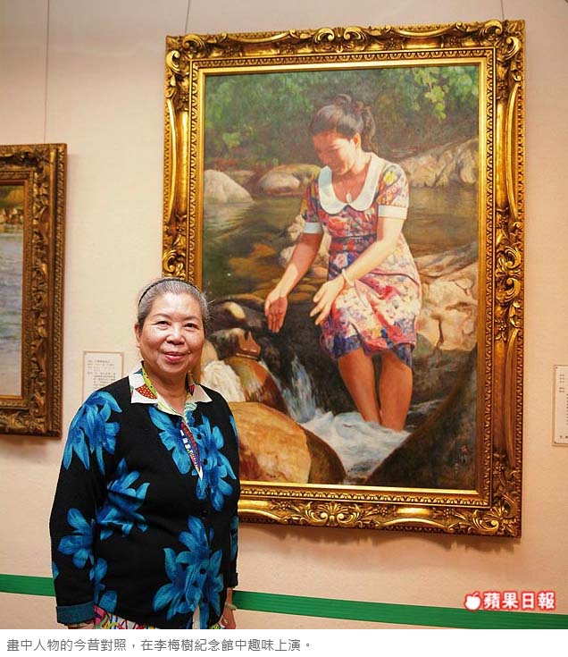
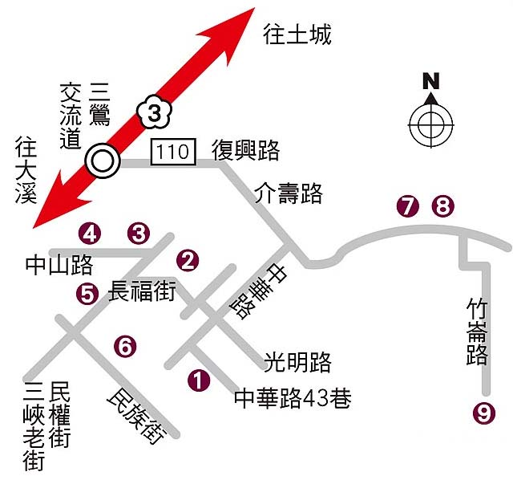

梅樹月遊三峽 探訪礦坑祕境
每年3、4月，整個三峽都化為一座無牆美術館！為了紀念台灣前輩畫家李梅樹，以及推廣藝術文化，三峽每年春天都會推出「梅樹月」活動，結合當代藝術、各種媒材，用藝術說三峽的故事，今年還將展場拓展至平時鮮少開放的成福煤礦，用多幅礦工畫作、攝影訴說那段黑金歲月。
高嘉聆｜蘋果日報／一日遊｜2016年4月2日
春天是梅子成熟的季節，每年這個時候，三峽的李梅樹紀念館總會推出梅樹月活動，為期約1個月，以出身三峽的畫家李梅樹為引子，結合當代藝術團隊，讓藝術走入三峽的大街小巷，化為一座打破圍籬的無牆美術館。
今年梅樹月在4/24前，共有多達12處景點共襄盛舉，其中最特別的就屬平時鮮少開放的成福煤礦。從1916年開礦至今，仍保留了濃濃的日式風情，景色優美僻靜，今年適逢成福煤礦開礦100周年，難得於梅樹月期間對外開放自由參觀，可說是期間限定的三峽祕境。
三峽老街 覽藝文風采
三峽過去是產煤重鎮，成福煤礦至1983年收坑前，是三峽採礦歷史最悠久的煤礦場。梅樹月期間，園區可見礦工畫家洪瑞麟的許多作品，擁有礦工和畫家兩種身分的洪瑞麟，當年常在礦坑內速寫煤礦工人的生活即景，流暢的筆觸將礦工們歷經風霜的身影，描繪得格外鮮活。園區內另有李賢文、梁正居、簡永彬等攝影家的礦工紀實，透過黑白照片讓人們回首礦場風華。
距離成福煤礦不遠的成福國小也很有意思，學校推廣生態教育多年，學生從一年級開始就拿起相機、穿上青蛙裝，進入生態池記錄周遭的一草一物，不僅人人都是小小攝影家，更是小小解說員，校內還有一座青蛙造型的土窯，師生用它來做炭筆、烤披薩及麵包，體現做中學的教育理念。
走逛梅樹月，不妨將李梅樹紀念館設為起點，先認識李梅樹的身世背景，再以步行的方式往三峽老街方向，一覽藝文風采。
三峽祖師廟是三峽老街地標，同時也是李梅樹最大件的作品，李梅樹曾主持祖師廟重建工程長達36年，將其打造成融合東西文化的廟宇，因此每年梅樹月自然少不了祖師廟。今年以賽豬公為主題，在祖師廟前廣場展出李梅樹的畫作，以及台灣前輩攝影家張才、成福國小攝影社的作品，穿越時代、跨越年齡重新詮釋賽豬公大拜拜的場景。
三峽老街上有眾多百年街屋，其中福久米糧是個推廣台灣好米的所在，今年也化為梅樹月的展點之一，不僅在街屋古井旁，展出李梅樹早年利用父親經營米行的米袋充當畫布，所創作的《家鄉的風景》，屋內還有一座陶製的Q版袖珍老街，由陶藝家許晏豪打造，有趣的是，石階旁擺放的鞋子竟然也是陶土製成，是陶藝家高蓮秀幾可亂真的作品。
阿公阿嬤變畫家 開畫展
今年參與梅樹月的藝術家不只有專業團隊，三峽教會松年大學的阿公阿嬤學員，也在教堂開起畫展，其中最年長的高齡92歲，以其樸拙的畫筆線條呈現出質樸之作。由於今年正好是三峽設教140周年，教會庭院也展出漫畫家杜福安的作品，運用生動畫面描述設教的歷程。
在梅樹月眾展點中，就屬歷史文物館的參與藝術家最多，多達20幾位當代藝術家跨界對話，相當精采。而逛完梅樹月，不妨往熊空方向到充滿日式茶道風情的大寮茶文館，喝茶靜心、享受山區氛圍，為三峽藝文之旅畫下完美的句點。

【風味美食】古味家常菜 下飯對味
位於三峽歷史文物館旁的古井餐廳，為一幢老房子，屋齡至少90年，店內有一口古井而得名。這家餐廳與李梅樹也頗有淵源，屋內掛有一幅李梅樹的畫作，是他從前在這棟房子的2樓所創作的，而這裡提供的古早味家常菜也很受到遊客的歡迎。
其中最熱銷的就是4菜1湯的500元合菜，適合2~4人享用，經濟實惠。菜色包括古井豆腐、招牌油雞、糖醋魚片、塔香茄子或炒時蔬等。古井豆腐是先將豆腐過油後，與魚露一同燒製，十分入味下飯，而招牌油雞則是選用仿土雞，皮Q肉嫩，為店家招牌菜。
糖醋魚片與一般店家做法不同的是，古井餐廳特別加入果汁配方調味，使整體更添自然的果香氣息，而噴香撲鼻的塔香茄子，同樣也是下飯之作。每到假日，古井餐廳時常川流不息，如欲前往，建議可先訂位，以免向隅。

【旅遊資訊】
◎開車
★李梅樹紀念館 國道3號下三鶯交流道往三峽方向，接110縣道(復興路、介壽路)轉中華路，接中華路43巷可抵。
★三峽祖師廟、三峽歷史文物館、古井餐廳、福久米糧、三峽教會中華路轉光明路，接長福街可抵三峽祖師廟，其餘景點皆在三峽老街周邊，開車不便，建議步行抵達。
★成福國小、成福煤礦 行110縣道可先抵達成福國小，後抵成福煤礦。
★大寮茶文館 110縣道轉竹崙路可抵。
◎搭車
★李梅樹紀念館、三峽祖師廟、三峽歷史文物館、古井餐廳、福久米糧、三峽教會 搭公車702、705、706至三峽老街站，下車步行皆可抵達。
★成福國小、成福煤礦 成福國小搭公車779至成福國小站，成福煤礦搭同班公車至成福站，下車步行可抵。
★大寮茶文館 大眾運輸不便，建議開車前往。
◎相關資訊
★李梅樹紀念館 (02)2673-2333 10:00~17:00 周一休 4/3、4/16黑金生態小旅行含導覽、礦工便當每人500元，滿30人另可成團，報名洽紀念館
★三峽祖師廟 (02)2671-1031 04:00~22:00
★三峽歷史文物館 (02)8674-3994 09:00~17:00 周一休
★古井餐廳 (02)8671-1798 平日11:00~14:30、16:30~21:00，假日11:00~21:00 周四休
★福久米糧 10:00~17:00 周一休
★三峽教會 (02)2671-1981 周二~六09:00~16:00，周一、日09:00~15:00
★成福煤礦 10:00~17:00 周一休
★大寮茶文館 (02)2668-1928 10:00~17:30 無休